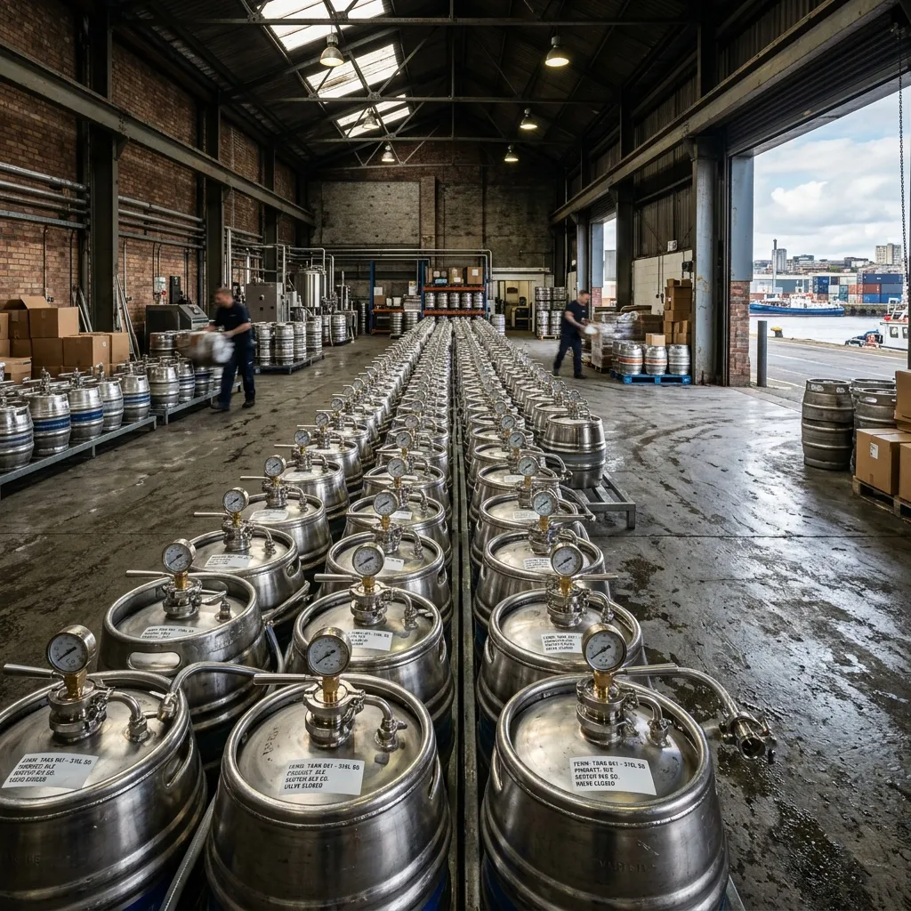
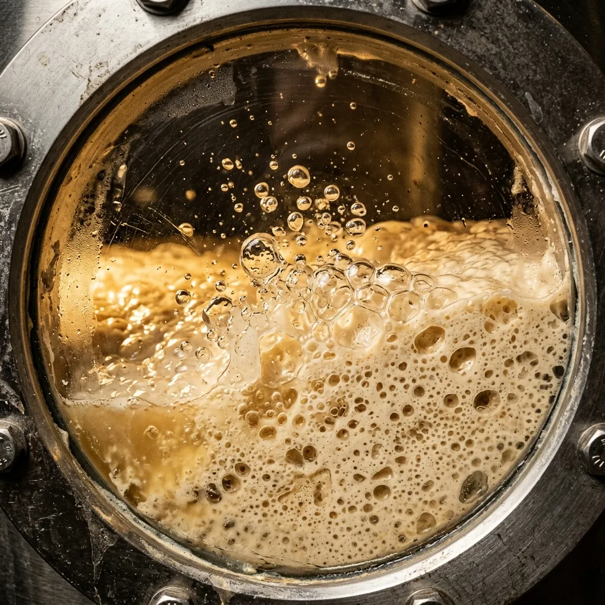
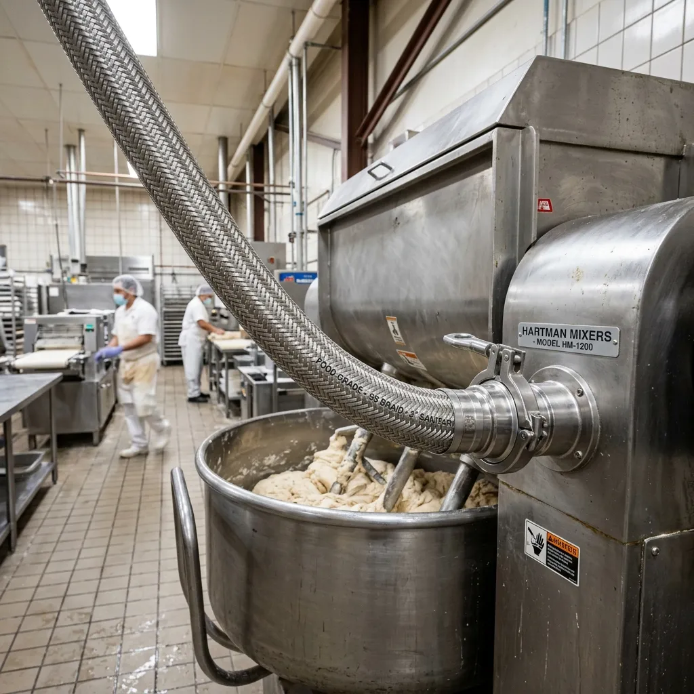
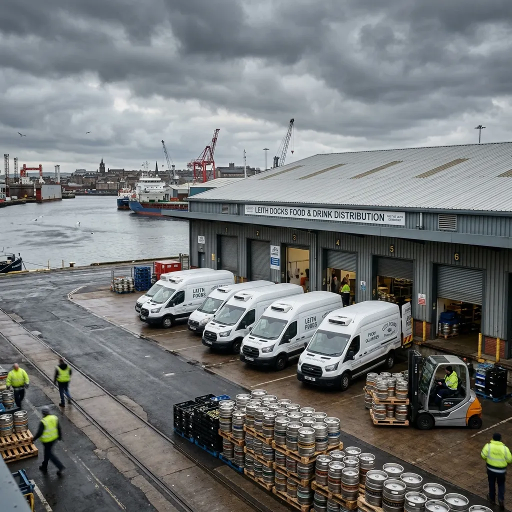

PRESSURISED SOURDOUGH BIOCULTURES DISPATCHED IN STAINLESS STEEL MANIFOLDS.
Live high-density levain, active koji slurries, and enzymatic grain starters delivered directly to commercial bakery mixing lines.
Mash & Manifold manufactures industrial-scale sourdough mother cultures and grain enzymes at the Port of Leith for commercial wholesale bakeries. We eliminate contaminated plastic buckets by circulating live biocultures in thirty-litre ASME-certified stainless steel keg manifolds under nitrogen blankets. Every batch is calibrated to four-point-eight billion viable lactic cells per gram and connects directly to automated dough mixers via sanitary tri-clamp fittings.

01 // THE PRESSURISED BIOCULTURE DISPATCH
Commercial bakeries scale flour, water, and thermal baking profiles to microgram precision, then ruin batch consistency by fermenting sourdough starters in open plastic tubs. Wild airborne molds, fluctuating cellar temperatures, and manual ladle transfers introduce uncontrolled microbial drift. Mash & Manifold treats live levain as precision biochemical feedstock, propagating pure ancestral cultures in 316-grade stainless steel bioreactors at our Leith facility.
We charge our thirty-litre transport manifolds with food-grade nitrogen at 1.2 bar, placing the live culture into stasis while preventing oxidative spoilage during refrigerated transit. Digital telemetry caps continuously monitor internal pressure, core temperature, and pH drift. At the bakery floor, operators couple the manifold directly into industrial spiral mixers using standard 1.5-inch sanitary tri-clamp hoses, dosing hundred-kilogram flour batches in ninety seconds without atmospheric exposure.
Empty manifolds return weekly on dedicated collection routes for automated caustic wash cycles and high-pressure steam sterilization. Our closed-loop fleet eliminates single-use plastic waste and guarantees identical fermentation kinetics across ten thousand consecutive production loaves.
02 // THE LIVE BIOCULTURE MANIFEST
Four precision formulations. Absolute microbial density. Calibrated for high-velocity industrial mixing lines.
ML-01 ACTIVE RYE LEVAIN MANIFOLD
- Substrate: 100-year Scots Bere barley rye starter
- Microbiology: 4.8 × 10^9 CFU/g lactic acid bacteria
- Telemetry: pH 3.82 | TTA 24.5
- Vessel: 30-litre pressurized keg
- Cost: £165 per weekly exchange
ML-04 HIGH-EXTENSIBILITY WHEAT LEVAIN
- Substrate: Organic heritage Fife wheat mother culture
- Application: Optimized for high-hydration sourdough boules and baguettes
- Microbiology: 3.9 × 10^9 CFU/g
- Telemetry: pH 4.05
- Cost: £150 per weekly exchange
ML-09 ROASTED BARLEY KOJI SLURRY
- Substrate: Cold-macerated pearl barley koji
- Enzymatics: Active alpha-amylase and protease enzymes
- Function: Accelerates crumb caramelisation in the bake
- Cost: £185 per weekly exchange
ML-14 WILD APPLE SPELT FERMENT
- Substrate: Acid-tolerant wild yeast slurry from East Lothian heritage orchards
- Function: Generates complex acetic/lactic ester ratios
- Cost: £175 per weekly exchange
03 // FERMENTATION KINETICS & MICROBIOLOGICAL TELEMETRY
Empirical proof of biochemical stability and CO2 gas production rates. Laboratory data over artisanal guesswork.
04 // THE 316-STAINLESS MANIFOLD ENGINEERING
Medical-grade hygienic containment designed specifically for automated commercial bakeries.

05 // COMMERCIAL BAKERY FIELD PROOF
Zero batch failure rates across heavy commercial manufacturing shifts.
The ML-01 manifold completely eliminated our fermentation drift. We dose directly into the spiral mixers and hit target pH on every single batch.
Consistency was our biggest risk until we switched to the closed-loop system. We haven't had a single contaminated tub in three years of heavy output.
The telemetry caps give our floor operators exact confidence. The flow rates through the tri-clamp hoses match our automated lines perfectly.
06 // THE CLOSED-LOOP CASK EXCHANGE PROTOCOL
Aseptic supply chain efficiency without bakery clean-in-place downtime.

BIOREACTOR INOCULATION & NITROGEN CHARGE
Live sourdough cultures are harvested directly from our primary stainless steel bioreactors under positive pressure into sanitized keg manifolds, immediately sealed and charged with food-grade nitrogen to halt oxidative degradation during dispatch.
SCHEDULED REFRIGERATED TRANSPORT
Manifolds are dispatched via our dedicated fleet of refrigerated commercial vans, maintaining a strict 3°C cold chain for direct delivery to wholesale bakery loading bays across central Scotland and northern manufacturing hubs.
CLOSED-SYSTEM DOSING
Floor operators connect heavy braided sanitary hoses directly to automated spiral dough mixers using 1.5-inch tri-clamp fittings, dosing one hundred kilogram flour batches in exactly ninety seconds without atmospheric exposure.
RETURN & 85°C CAUSTIC STERILISATION
Empty depleted manifolds are collected on the weekly rotation route and returned to the Leith depot for automated multi-stage caustic wash cycles and high-pressure steam decontamination before subsequent inoculation cycles.
07 // TECHNICAL BAKERY ENGINEERING FAQ
Authoritative operational clarity for head bakers and plant engineers.
HOW DO WE CALCULATE DOUGH DOSING AND FERMENTATION FLOOR TIMES?
Each manifold is shipped with a certified biochemical assay detailing the exact CFU density and TTA output. Our biochemists will provide a calibration matrix tailored to your specific flour protein percentages and ambient bakery floor temperatures to ensure absolutely identical proofing schedules.
ARE THE TRI-CLAMP HOSES COMPATIBLE WITH OUR EXISTING MIXER PUMP HEADS?
Yes. The kegs utilise universal 1.5-inch sanitary tri-clamp fittings which couple seamlessly with standard pneumatic and lobe pumps used on commercial spiral mixing lines. Custom step-down adaptors are readily available upon initial plant requisition.
WHAT ARE THE TEMPERATURE EXCURSION TOLERANCES DURING LOADING DOCK HANDLING?
The thick 316-stainless walls provide significant thermal mass. At ambient summer dock temperatures of 20°C, the internal bioculture will not deviate by more than 1.5°C per hour. We mandate a maximum dock exposure time of exactly four hours before refrigerated storage.
DO YOU ACCOMMODATE CUSTOM GRAIN AND FLOUR SUBSTRATE FERMENTATION REQUESTS?
We routinely propagate proprietary mother cultures for large-scale bakery clients using their specified heritage grain supplies. This custom biological operation requires a minimum commitment of ten weekly manifolds and a mandatory four-week laboratory onboarding phase.
WHAT IS THE CASK DEPOSIT STRUCTURE AND DAMAGED MANIFOLD REPLACEMENT TERM?
New industrial accounts are subject to a £250 holding deposit per stainless manifold. Accidental damage to the digital telemetry caps or sanitary valves during bakery floor operations incurs a fixed £85 hardware replacement surcharge on the weekly invoice.
WHAT IS YOUR EXACT COMMERCIAL DELIVERY RADIUS?
Our dedicated refrigerated logistics fleet currently services commercial food production facilities across all of central Scotland, spanning from Glasgow directly to Aberdeen, and extending south into northern England up to the Newcastle perimeter.
08 // CASK REQUISITION & PLANT INTEGRATION TERMINAL
Establish a weekly delivery schedule. Direct supply portal for verified wholesale food producers.

DISTRIBUTION DEPOT
Unit 4, Vulcan Industrial Estate
Baltic Street, Port of Leith
Edinburgh, EH6 7BR, UK
N 55° 58' 31" / W 3° 10' 12"